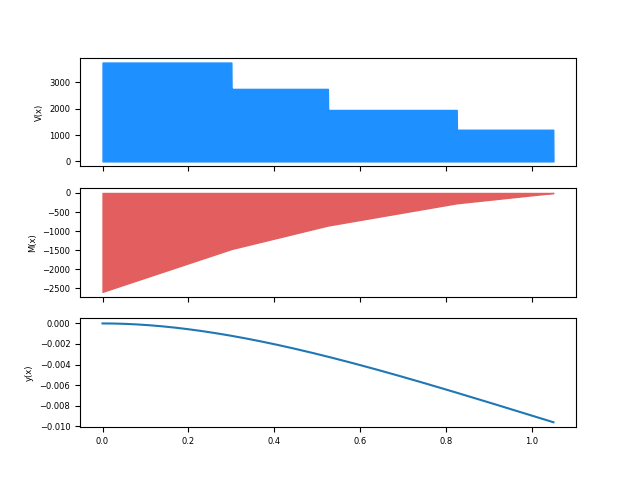

Propuesta de solución: Proyecto 02, Mecánica de Materiales
Lo siguiente constituye una propuesta de solución para el problema planteado como proyecto de la unidad III para la asignatura de mecánica de materiales.
En el siguiente PDF incrustado se plantea de forma generalizada el problema y se establecen las ecuaciones de cortante, momento, pendiente y deflexión.
Problema C1 MDM Flexión by Pedro Jorge De los Santos on Scribd
Basado en el desarrollo anterior se hace una programa de linea de comandos utilizando Python, el cual tiene la capacidad de trabajar para N cargas puntuales y trazar el diagrama de fuerza cortante, el diagrama de momentos y la curva de la elástica de la viga.
# -*- coding: utf-8 -*- from __future__ import division import numpy as np import matplotlib.pyplot as plt import matplotlib as mpl mpl.rcParams["font.size"] = 6 def sifu(x,a,n): """ Funcion de singularidad -> piecewise form """ return np.piecewise(a, [a > x, a <= x], [0, lambda a:(x-a)**n]) def leer_fuerzas(n): """ Lee las fuerzas puntuales aplicadas """ F = [] for x in range(n): F.append(input("P{0}= ".format(x+1))) return np.array(F) def leer_coordenadas(n): """ Lee las coordenadas en que se aplican las fuerzas """ A = [] for x in range(n): A.append(input("a{0}= ".format(x+1))) return np.array(A) def FV(x,MA,RA,P,a): """ Devuelve el cortante para un punto x """ return (RA)*x**0 - np.sum((P)*sifu(x,a,0)) def FM(x,MA,RA,P,a): """ Devuelve el momento para un punto x """ return -(MA)*x**0 + (RA)*x - np.sum((P)*sifu(x,a,1)) def Fm(x,E,I,MA,RA,P,a): """ Devuelve la pendiente para un punto x """ return (1/(E*I))*(-(MA)*x + (RA/2)*x**2 - np.sum((P/2)*sifu(x,a,2))) def Fy(x,E,I,MA,RA,P,a): """ Devuelve la deflexión para un punto x """ return (1/(E*I))*(-(MA/2)*x**2 + (RA/6)*x**3 - np.sum((P/6)*sifu(x,a,3))) def mostrar_info(x0,E,I,MA,RA,P,a,c,Su): """ Imprime en consola la información del punto de interés y general""" print("V= {0}".format(FV(x0,MA,RA,P,a))) print("M= {0}".format(FM(x0,MA,RA,P,a))) print("m= {0}".format(Fm(x0,E,I,MA,RA,P,a))) print("y= {0}".format(Fy(x0,E,I,MA,RA,P,a))) Sm = MA*c/I FS = Su/Sm print("Esfuerzo max= {0}".format(Sm)) print("Factor de seguridad= {0}".format(FS)) def main(): """ Programa principal """ n = input("Cantidad de fuerzas puntuales a aplicar: ") P = leer_fuerzas(n) a = leer_coordenadas(n) E = input("Modulo de elasticidad (E)= ") I = input("Momento de inercia (I)= ") L = input("Longitud de la viga (L)= ") c = input("Distancia al eje neutro (c)= ") Su = input("Esfuerzo ultimo (Su)= ") x0 = input("Coordenada de interes (x0)= ") #~ P = np.array([1000,800,750,1200]) # for testing #~ a = np.array([0.3,0.525,0.825,1.05]) #~ L = 1.05 #~ E, I, c, Su, x0 = 200e9, 4.16e-7, 25e-3, 450e6, L/2 MA = np.sum(P*a) RA = np.sum(P) xx = np.linspace(0,L,2000) V,M,m,y = [],[],[],[] for x in xx: V += [FV(x,MA,RA,P,a)] M += [FM(x,MA,RA,P,a)] m += [Fm(x,E,I,MA,RA,P,a)] y += [Fy(x,E,I,MA,RA,P,a)] mostrar_info(x0,E,I,MA,RA,P,a,c,Su) fig, ax = plt.subplots(3, sharex=True) ax[0].fill_between(xx, V, color="#1E90FF") ax[1].fill_between(xx, M, color="#E35E5E") ax[2].plot(xx, y) ax[0].set_ylabel("V(x)") ax[1].set_ylabel("M(x)") ax[2].set_ylabel("y(x)") plt.show() if __name__=='__main__': main()
Para ciertos valores de prueba el programa produce una gráfica como la mostrada a continuación:

Comentarios
Comments powered by Disqus